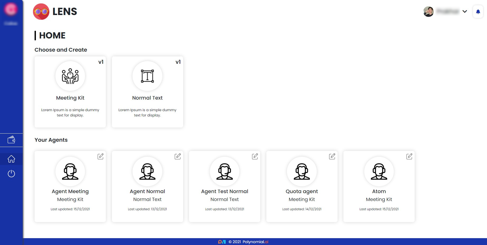
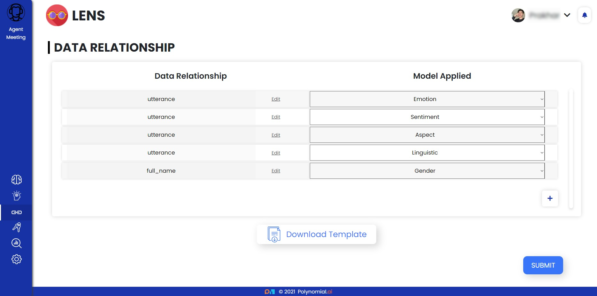
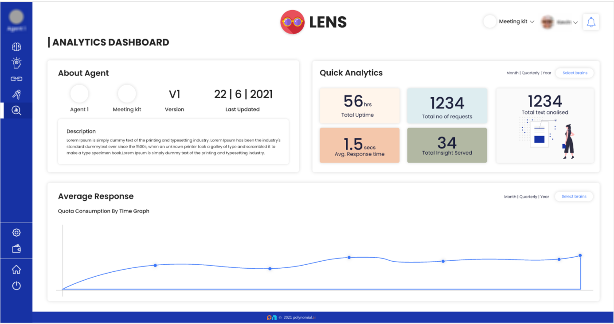

What is Lens?
Lens is a one-of-a-kind Software as a Service (SaaS) that provides textual insights using a combination of machine learning techniques trained on millions of data points collected via multiple APIs, powerful web crawlers and scrapers, open-source data banks, and fine-tuned state-of-the-art Transformer Models.
What is an Agent?
Agents are a custom tool that helps in the selection of Brains and Sub-Brains, the storage of Access Keys, the selection and modification of Data Relationships, and provide an Analytical Dashboard for in-depth study.
What is a Kit?
Kits are pre-configured agents with Special-Brains that deliver Special Insights on textual requests.
